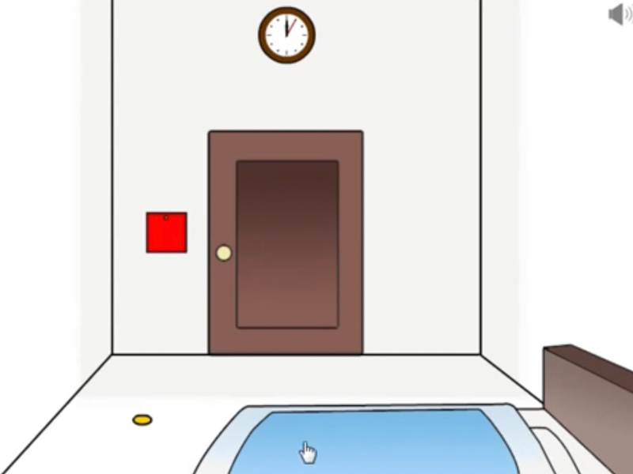
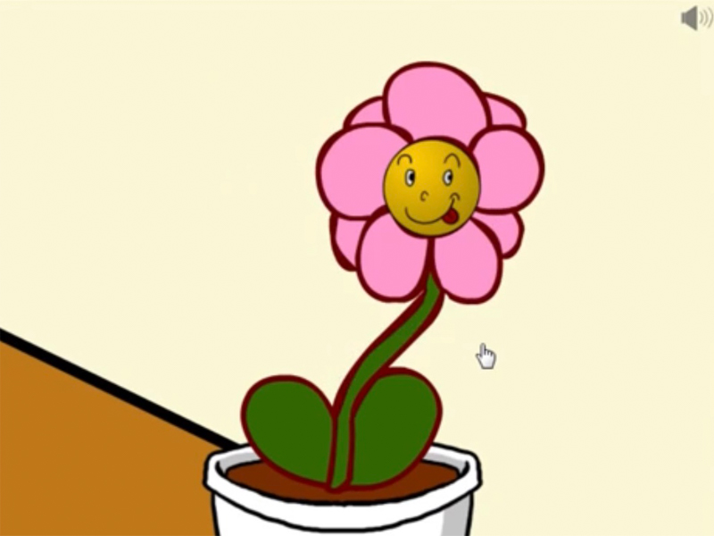
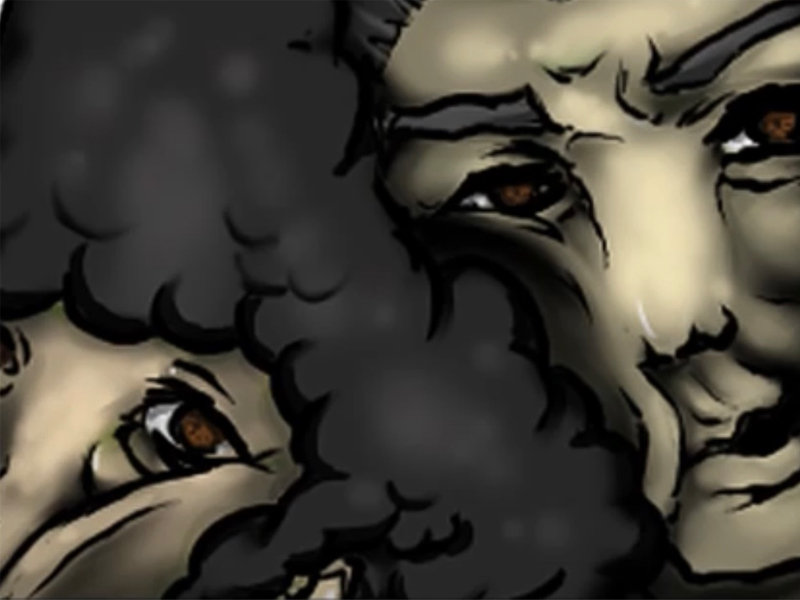

実家が罠だらけ
- 配信日:
- 対応機種:PC
- 定価:無料
- ジャンル:謎解き
- タグ:#バカゲー#pcゲーム#無料ゲーム#ホラー

｢へんなの」という謎の爆発物からを避けながら
実家の謎を解く脱出ゲーム！
バカゲー要素
- バカ要素① 「へんなの」が様々なところに潜んでる
- バカ要素② 両親が息子を閉じ込めて先に脱出してしまう
- バカ要素③ へんなのが姿を変えて爆破してくる
ゲーム概要
K@ssy様製作のちょっと変わった伝説のバカ脱出ゲーム。
「起きたら家が罠だらけになっていたら怖いよね…」…夢から覚めると住み慣れていたハズの実家が両親によって危険な仕掛けでいっぱいになっていた！
｢へんなの｣という謎のキャラクターを見るだけで爆発してしまう地獄の状況の中、謎をときながら巧妙なトラップを掻い潜り、はたして君は実家から脱出できるかっ！？
このゲームの見所はなんといっても「へんなの」の登場方法でその意外性とインパクトが話題となり、
youtuberやゲーム実況者などにもプレイされ有名な"バカゲー"として今現在も親しまれている。
プレイ動画ここらかはネタバレ注意
5分でわかるプレイ動画はこちら
ゲームがほぼわかるプレイ動画はこちら
プレイ感想
まずプレイして思ったのはまぁ出てくるキャラクターがバカな匂いプンプンだなと思った。まず「へんなの」。
あの黄色い丸を見て馬鹿だと思わない人はいませんよね。まぁ初めて見た時はびっくりするようなBGMと爆破エフェクトがかかってすごい心臓が止まりそうになる位にびっくりしました...
しかもヘッダー画像にある黄色い円という概念を壊して所々花の1部に化けたりとか色を変えたりとか家具に擬態したりとか鍵に期待したりとか
ああやって製作者が変なアイディアを出すから馬鹿で面白いゲームができるんだなと思いました。
特に演出面では急に変なのから逃げるアーケードゲームみたいなのもあったし、いきなり両親がカプセルに詰まって入っていて出てきた演出は世界観をぶち壊されました笑笑
よくこういうバカ謎解きゲーとかはよく見たことあるけど、「〇〇を見たら爆発」と言う縛りを加えた一風変ったギミックはとても考えられてるなと思いました。
そして総プレイ時間が20分で終わるのでサクサク進めることができていろんな方にもお手柄でお勧めできるゲームだと思いました。
皆さんもぜひプレイしてみてください一応この感想書いている私動画編集したんで見てください。